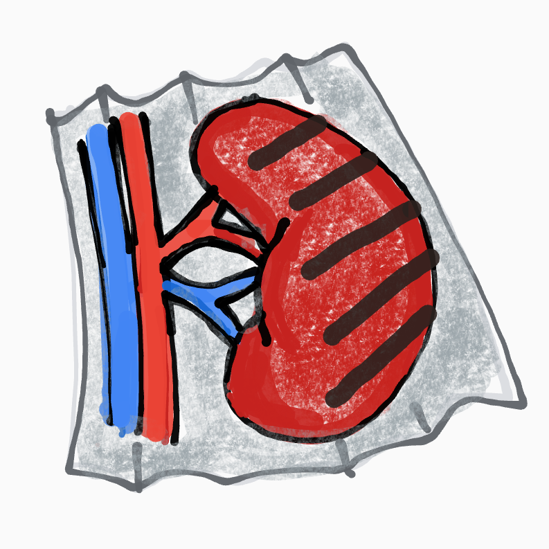
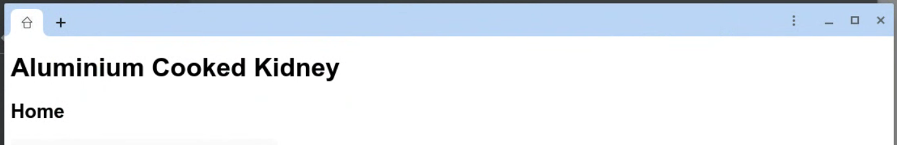

Aluminum Cooked Kidney tests the use of tabbed mode and pinned home tabs in PWA apps. If pinned home tabs function correctly, the icon on the pinned home tab should display a house rather than a kidney.
The following images show what we are looking for:

<-- This is correct.